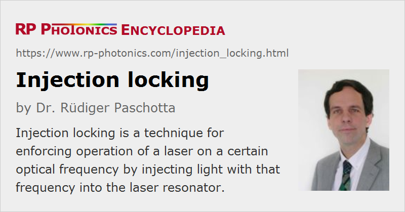

Injection Locking
Definition: a technique for enforcing operation of a laser on a certain optical frequency by injecting light with that frequency into the laser resonator
Categories: lasers, fluctuations and noise, light pulses, methods
How to cite the article; suggest additional literature
Author: Dr. Rüdiger Paschotta
Injection locking is a technique which is applied mainly to continuous-wave single-frequency laser sources when a high output power needs to be combined with a very low intensity noise and phase noise. Such low-noise performance, or even just single-frequency operation, is significantly more difficult to achieve in high-power lasers, because these tend to be more susceptible to mechanical vibrations, cannot utilize very low-noise pump sources, and are subject to significant thermal influences. In addition, it is not desirable to insert optical filters into the laser resonator, as such filters could degrade the power efficiency and might not be able to tolerate the high power level.
In principle, one might construct a low-noise low-power laser and amplify its output, e.g. with a high-power fiber amplifier (→ master oscillator power amplifier). However, that approach is plagued by various fundamental and practical problems. In particular, the to some extent unavoidable amplifier noise raises the noise level, so that the standard quantum noise level can not be reached. Also, multiple amplifier stages (i.e. an amplifier chain) are often required if the required overall amplification factor is large. Finally, the nonlinearities of fibers cause problems particularly for single-frequency operation (stimulated Brillouin scattering).
Injection locking is a different approach, avoiding these problems. Here, the high output power is generated with a high-power laser (not with an amplifier), called the slave laser, the noise level of which is strongly reduced by injecting the output of a low-noise low-power master laser (or seed laser) (usually a bulk laser) through a partially transparent resonator mirror. Provided that the frequencies of the master laser and the free-running slave laser are sufficiently close, the injection forces the slave laser to operate exactly on the injected frequency with relatively little noise. The higher the injected power, the larger is the allowable frequency offset between the seed laser and the slave laser's resonance. Close to quantum-limited intensity and phase noise can be achieved with this technique.
The resonator mode on which the injection-locked laser operates is usually a Gaussian mode, but it is also possible to enforce operation on some higher-order mode.
Note that injection locking is more than injection seeding: it means emission strictly on the seed laser frequency. Injection seeding without frequency locking is often applied to Q-switched lasers and to optical parametric oscillators, and sometimes incorrectly called injection locking.
Self-injection Locking
The term self-injection locking is sometimes used for a technique which is somewhat related to the technique explained above. However, the seed signal then comes from the same laser, rather than from an external seed laser. This means that the laser resonator receives some optical feedback – usually with some spectral filtering. For example, filtered optical feedback can be provided to a laser diode by attaching an optical fiber which contains a narrowband fiber Bragg grating. An alternative way to describe this situation is to see the combination of output coupler and external reflector as a kind of Fabry–Pérot interferometer, forming an effective output coupler with strongly frequency-dependent transmission. This picture also explains why the spacing between output coupler and external reflector is important: it determines the bandwidth of the Fabry–Pérot. In effect, the laser linewidth may be strongly reduced compared with the situation without the external reflector.
In some cases, the term “self-injection locking” is used where self injection seeding would be more appropriate.
Questions and Comments from Users
Here you can submit questions and comments. As far as they get accepted by the author, they will appear above this paragraph together with the author’s answer. The author will decide on acceptance based on certain criteria. Essentially, the issue must be of sufficiently broad interest.
Please do not enter personal data here; we would otherwise delete it soon. (See also our privacy declaration.) If you wish to receive personal feedback or consultancy from the author, please contact him e.g. via e-mail.
By submitting the information, you give your consent to the potential publication of your inputs on our website according to our rules. (If you later retract your consent, we will delete those inputs.) As your inputs are first reviewed by the author, they may be published with some delay.
Bibliography
| [1] | R. H. Pantell, “The laser oscillator with an external signal”, Proc. IEEE 53, 474 (1965), doi:10.1109/PROC.1965.3817 |
| [2] | C. L. Tang and H. Statz, “Phase locking of laser oscillators by injected signals”, J. Appl. Phys. 38 (1), 323 (1967), doi:10.1063/1.1708974 |
| [3] | H. L. Stover and W. H. Steier, “Locking of laser oscillators by light injection”, Appl. Phys. Lett. 8, 91 (1966), doi:10.1063/1.1754502 |
| [4] | C. J. Buczek et al., “Laser injection locking”, Proc. IEEE 61, 1411 (1973), doi:10.1109/PROC.1973.9294 |
| [5] | S. A. Magnitskii et al., “Generation of bandwidth-limited tunable picosecond pulses by injection-locked optical parametric oscillators”, Opt. Lett. 11 (1), 18 (1986), doi:10.1364/OL.11.000018 |
| [6] | L. Winkelmann et al., “Injection-locked single-frequency laser with an output power of 220 W”, Appl. Phys. B 102 (3), 529 (2011), doi:10.1007/s00340-011-4411-9 |
See also: injection seeding, stabilization of lasers, linewidth, single-frequency lasers, laser noise, phase noise, seed lasers, slave laser
and other articles in the categories lasers, fluctuations and noise, light pulses, methods
|  |
If you like this page, please share the link with your friends and colleagues, e.g. via social media:
These sharing buttons are implemented in a privacy-friendly way!